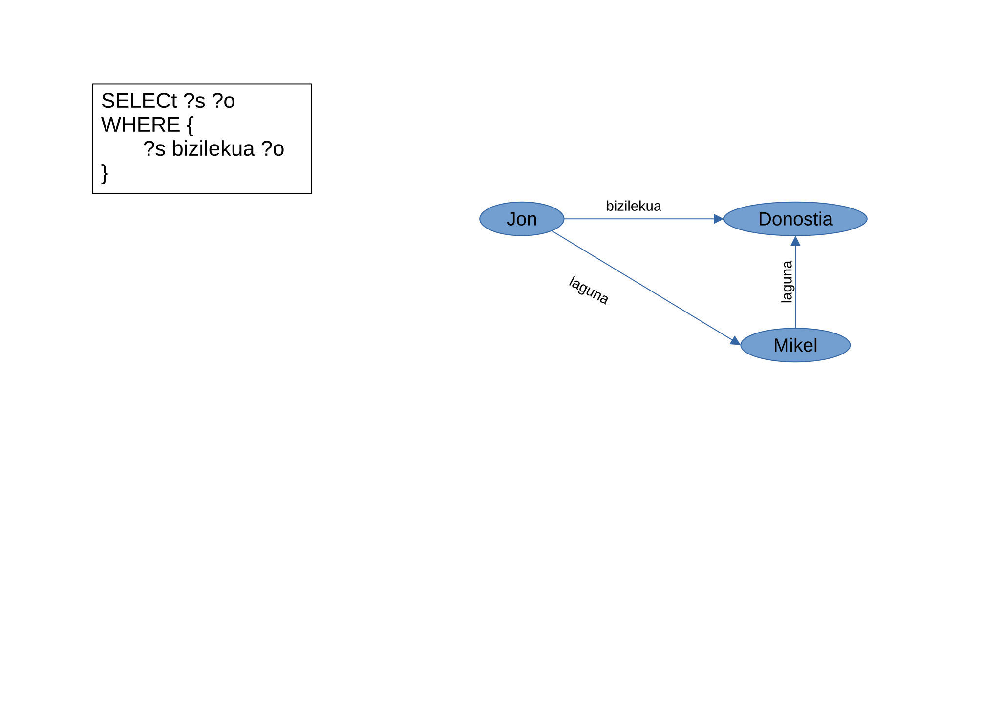
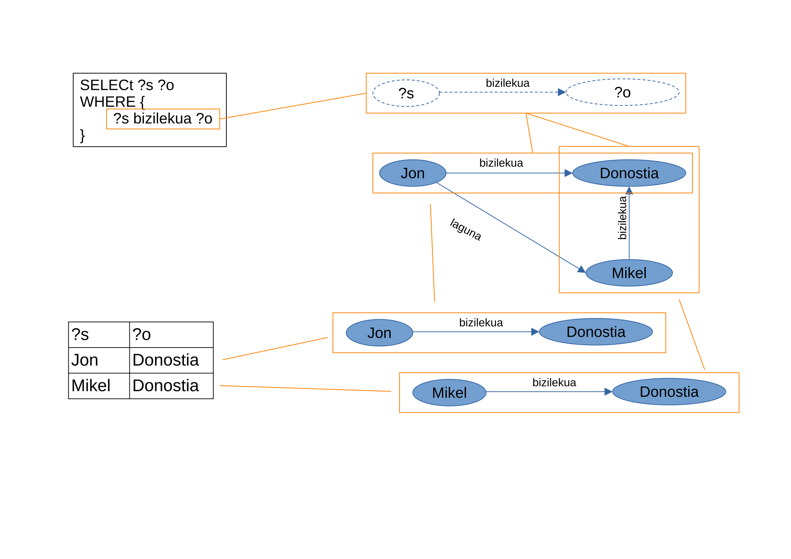
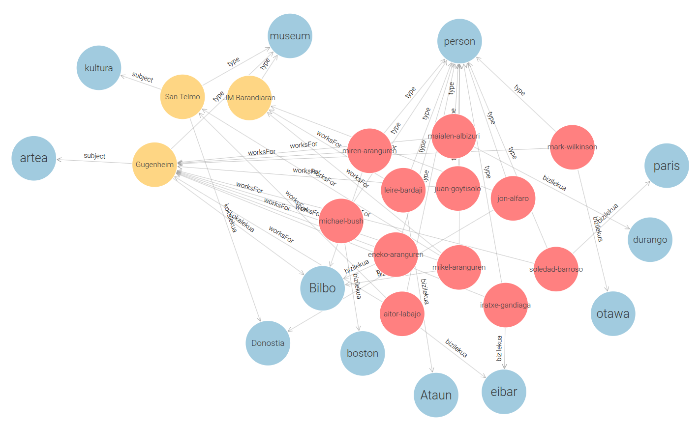
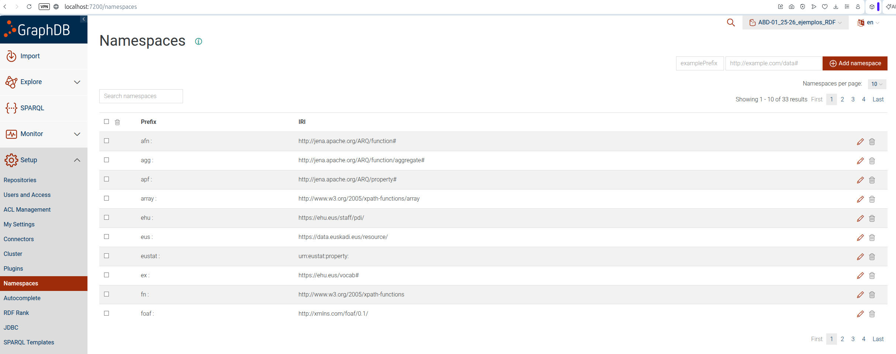

SPARQL
Mikel Egaña Aranguren
mikel-egana-aranguren.github.io

Mikel Egaña Aranguren
Mikel Egaña Aranguren
mikel-egana-aranguren.github.io
https://github.com/mikel-egana-aranguren/DBA

SPARQL Protocol and RDF Query Language
Learning SPARQL (liburua)
Wikidata Query Service (adibideekin)


[Museoak.rdf]

# Prefix-ak
PREFIX rdf: <http://www.w3.org/1999/02/22-rdf-syntax-ns#>
PREFIX rdfs: <http://www.w3.org/2000/01/rdf-schema#>
PREFIX owl: <http://www.w3.org/2002/07/owl#>
PREFIX foaf: <http://xmlns.com/foaf/0.1/>
PREFIX gip_prop: <http://gipuzkoa.eus/prop/>
PREFIX gip: <http://gipuzkoa.eus/resource/>
PREFIX dbpedia: <http://dbpedia.org/ontology/>
PREFIX gov: <http://vocab.data.gov/def/drm#>

# Jaso nahi ditugun aldagaiak (Denak = "*")
SELECT ?subjektua ?klasea
# Grafo nagusitik atera nahi dugun grafo-patroia
WHERE {
?subjektua gip_prop:bizilekua gip:donostia .
?subjektua rdf:type ?klasea
}
SELECT ?langilea ?bizilekua
WHERE {
# Pertsona izan behar du
?langilea rdf:type foaf:person .
# Nonbaiten bizi behar du
?langilea gip_prop:bizilekua ?bizilekua
}
SELECT ?langilea ?bizilekua
WHERE {
# Pertsona izan behar du
?langilea rdf:type foaf:person .
# Leku batean bizi daiteke edo ez
OPTIONAL {
?langilea gip_prop:bizilekua ?bizilekua
}
}
SELECT ?entitatea ?izena
WHERE {
{ ?entitatea rdfs:label ?izena }
UNION
{ ?entitatea foaf:name ?izena }
}
SELECT ?pertsona ?izena
WHERE {
?pertsona foaf:name ?izena
}
ORDER BY DESC (?izena) # DESC edo ASC izan daiteke
SELECT ?pertsona ?izena
WHERE {
?pertsona foaf:name ?izena
}
ORDER BY DESC (?izena)
LIMIT 3
SELECT ?pertsona ?izena
WHERE {
?pertsona foaf:name ?izena
}
ORDER BY DESC (?izena)
LIMIT 3
OFFSET 3 # OFFSET 6
SELECT ?museoa ?langile_kop
WHERE {
?museoa gip_prop:kopurua ?langile_kop .
FILTER (?langile_kop > "800"^^xsd:int)
}
SELECT ?langilea ?izena
WHERE {
?langilea foaf:name ?izena .
FILTER regex(?izena,'Mi.*')
}
Logika: !, &&, ||
Kalkuluak: +, -, *, /
Alderapenak: =, !=, >,<
SPARQL test-ak: isURI, isBlank, isLiteral, bound
Datuetan sartu: str, lang, datatype
Gehiago: sameTerm, langMatches, regex, ...
SELECT ?lantokia # DISTINCT
WHERE {
?person rdf:type foaf:person .
?person gov:worksFor ?lantokia
}
ASK
WHERE {
?person gov:worksFor gip:gugenheim
}
DESCRIBE <http://gipuzkoa.eus/resource/mikel-aranguren>
[Visual]
Grafoa: tripleen multzoa
Multzo osoa URI batekin identifikatzen da (datuena ez dena)
Triple Store guztiek Default Graph bat dute
INSERT DATA{
GRAPH <http://example/bookStore> {
<http://example/book1> gip_prop:price 42
}
}
SELECT *
FROM <http://example/bookStore> # Grafo URI gabe probatu
WHERE {
?s ?p ?o .
}
COUNT: elementuak zenbatu
SUM: balioen batura
AVG: batez bestekoa
MIN / MAX: minimoa eta maximoa
GROUP_CONCAT: balioak kateatu
SAMPLE: adibide-balio bat lortu
SELECT (COUNT(?person) AS ?guztira)
WHERE {
?person rdf:type foaf:person
}
Emaitzak aldagai baten balioaren arabera multzokatu
SELECT ?hiria (COUNT(?museo) AS ?museoKop)
WHERE {
GRAPH <urn:count> {
?museo rdf:type dbpedia:museum ;
gip_prop:kokalekua ?hiria .
}
}
GROUP BY ?hiria
ORDER BY DESC(?museoKop)
[Museoak-count.ttl]
Taldeak filtratu agregazioaren ondoren
SELECT ?hiria (COUNT(?museo) AS ?museoKop)
WHERE {
GRAPH <urn:count> {
?museo rdf:type dbpedia:museum ;
gip_prop:kokalekua ?hiria .
}
}
GROUP BY ?hiria
HAVING (COUNT(?museo) > 1)
ORDER BY DESC(?museoKop)
Balioak aldagaiei esleitu kontsultaren barruan
SELECT ?person ?fullName
WHERE {
GRAPH <urn:name-surname>{
?person foaf:firstName ?first ;
foaf:lastName ?last .
}
BIND(CONCAT(?first, " ", ?last) AS ?fullName)
}
[Museoak-name-surname.ttl]
CONCAT: string-ak kateatu
STRLEN: string-aren luzera
SUBSTR: azpikatea
UCASE / LCASE: maiuskulak / minuskulak
STRSTARTS / STRENDS / CONTAINS: string-etan bilatu
REPLACE: testua ordeztu
REGEX: adierazpen erregularrak
SELECT ?museo ?izena
WHERE {
?museo rdf:type dbpedia:museum ;
rdfs:label ?izena .
FILTER REGEX(?izena, "Gugen")
}
ABS: balio absolutua
ROUND / CEIL / FLOOR: biribiltzea
RAND: ausazko zenbakia
Eragileak: +, -, *, /
NOW(): uneko data eta ordua
YEAR / MONTH / DAY: osagaiak atera
HOURS / MINUTES / SECONDS: ordu zehatza
Inline balioak aldagaiei eman (Kontsulta parametrizatuetarako baliagarria)
SELECT ?museo ?obrak
WHERE {
VALUES ?museo {
<http://gipuzkoa.eus/resource/gugenheim>
<http://gipuzkoa.eus/resource/san-telmo>
}
?museo gip_prop:kopurua ?obrak
}
Patroi batekin bat datozen emaitzak baztertu: museo guztiak, 300 obra baino gehiago dituzten museoak kenduta
SELECT ?museo ?obrak
WHERE {
?museo rdf:type dbpedia:museum .
MINUS {
?museo gip_prop:kopurua ?obrak .
FILTER (?obrak > 300)
}
}
Patroi baten existentzia ezaren arabera filtratu
EXISTS/NOT EXISTS: filtroa, ez ditu binding-ak ezabatzen
MINUS: soluzio osoak ezabatzen ditu
NOT EXISTS eraginkorragoa da balioztatzerako
MINUS erabilgarriagoa da patroi konplexuen bazterketarako
^: alderantzizkoa (ex:parent^ seme-alabak aurkitzen ditu)
*: zero edo gehiago (ex:knows* ezagunen sarea)
+: bat edo gehiago (ex:subClassOf+ hierarkiarako)
!: edozein erlazio hori izan ezik
?: aukerakoa (zero edo bat)
|: alternatiboa (ex:email|ex:phone)
/: sekuentzia (ex:livesIn/ex:country)
SELECT ?person ?city
WHERE {
?person rdf:type foaf:person .
?person gov:worksFor/gip_prop:kokalekua ?city .
}
W3C-ren estandarra (=HTML, !=SQL)
DELETE DATA {
<http://gipuzkoa.eus/resource/aitor-labajo>
rdf:type foaf:person
}
# DESCRIBE <http://gipuzkoa.eus/resource/aitor-labajo>
DELETE {?person rdf:type foaf:person}
WHERE {?person foaf:name ?name}
#SELECT * WHERE {
# ?person rdf:type foaf:person
#}
INSERT DATA {
gip:aitor-labajo rdf:type gip:hiritar
}
# DESCRIBE gip:aitor-labajo
INSERT {
gip:jon-alfaro rdf:type ?type .
}
WHERE {
gip:aitor-labajo rdf:type ?type .
}
# DESCRIBE <http://gipuzkoa.eus/resource/jon-alfaro>
Email-a modu transakzionalean eguneratu:
DELETE { ?person ex:email ?oldEmail }
INSERT { ?person ex:email ?newEmail }
WHERE {
?person foaf:name "Mikel" ;
ex:email ?oldEmail .
BIND("mikel@new.com" AS ?newEmail)
}
CONSTRUCT {
?langilea rdf:type gip:gugenheim_langilea
}
WHERE {
?langilea gov:worksFor gip:gugenheim
}
LOAD <https://rest.uniprot.org/uniprotkb/P01308.rdf>
INTO GRAPH <urn:uniprot>
CLEAR GRAPH <urn:uniprot>
# CLEAR DEFAULT
# CLEAR ALL
DROP GRAPH <http://example.org/myGraph>
# DROP ALL
COPY: grafo bat beste batera kopiatu (helburua gainidazten du)
MOVE: grafoa mugitu (kopiatu + jatorrizkoa ezabatu)
ADD: tripleak helburura gehitu (gainidatzi gabe)
COPY <urn:name-surname>
TO <urn:nombre-apellidos>
COPY DEFAULT
TO <urn:backup>
W3C-ren estandarra (=HTML, !=SQL)
HTTP GET query parametroarekin: GET /sparql?query=SELECT...
HTTP POST (kontsulta luzeagoetarako): POST /sparql body URL-encoded-ekin
Content negotiation (Accept header): application/sparql-results+json, text/csv, application/rdf+xml, text/turtle
[adibideak/post.sh]
Python: RDFLib, SPARQLWrapper
Java: Apache Jena, RDF4J
W3C-ren estandarra (=HTML, !=SQL)
SPARQL endpoint-ei buruzko metadatuak eskaintzen ditu bezeroei laguntzeko:
curl -H "Accept: text/turtle" https://dbpedia.org/sparql/
[adibideak/dbpedia_service_description.ttl]
W3C-ren estandarra (=HTML, !=SQL)
Hainbat SPARQL endpoint kontsultatzea ahalbidetzen dute kontsulta bakarrean
Jatorri desberdinetako datuak konbinatu SERVICE hitz gakoa erabiliz
INSERT DATA {
<http://gipuzkoa.eus/resource/bilbo> owl:sameAs <http://dbpedia.org/resource/Bilbao> .
}
SELECT ?pop
WHERE {
gip:bilbo owl:sameAs ?town .
SERVICE <https://dbpedia.org/sparql/> {
?town <http://dbpedia.org/ontology/populationTotal> ?pop .
}
}
W3C-ren estandarra (=HTML, !=SQL)
RDF grafoak kudeatu HTTP bidez:
Oinarrizko endpoint-a: konfigurazioaren arabera
Parametroak:
graph=<URI>: Named Graph zehaztugraph gabe: Default Graph-ean du eraginaContent-Type: RDF/XML, Turtle, N-Triples, etab.
| Alderdia | Graph Store HTTP | SPARQL UPDATE |
|---|---|---|
| Granularitatea | Grafo osoa | Triple zehatzak |
| Interfazea | REST/HTTP | SPARQL kontsulta |
| Ohiko erabilera | Bertsio osoak ordeztu | Aldaketa zehatzak |
| Formatua | RDF (TTL, RDF/XML, etab.) | SPARQL INSERT/DELETE |